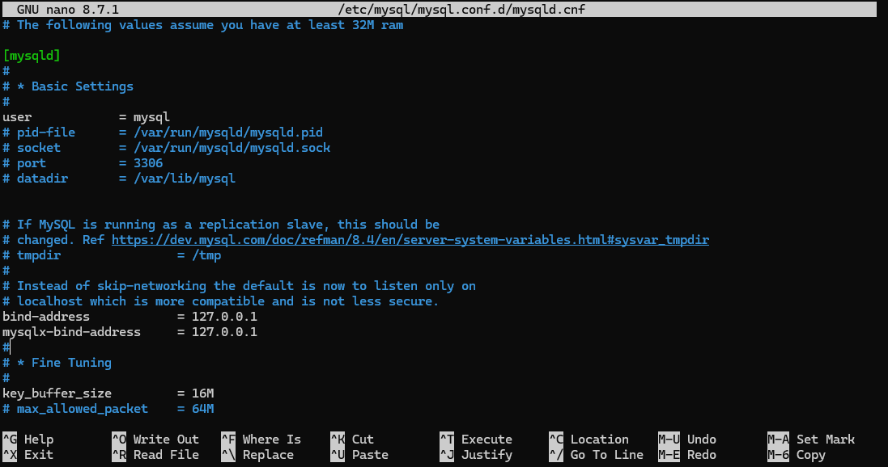

Instalando y Configurando MySQL en Ubuntu
INSTALACIÓN Y CONEXIÓN REMOTA DE MySQL
Ubuntu Server + MySQL Shell en Windows
Guía paso a paso
| Servidor MySQL | Ubuntu Server · 192.168.100.20 |
| Cliente | Windows · 192.168.100.30 |
| Puerto MySQL | TCP 3306 |
| Usuario utilizado | root |
Objetivo: instalar MySQL Server, habilitar conexiones remotas y acceder desde Windows únicamente mediante terminal.
1 Escenario de la práctica
En esta guía se utilizará el siguiente escenario de ejemplo:
| Equipo | Dirección IP | Función |
|---|---|---|
| Ubuntu Server | 192.168.100.20 | Servidor MySQL |
| Windows | 192.168.100.30 | Cliente MySQL |
Se utilizará el puerto TCP 3306, que es el puerto habitual de MySQL.
2 Instalar MySQL Server en Ubuntu Server
Actualizar la información de los repositorios:
sudo apt update
Instalar el servidor MySQL:
sudo apt install mysql-server -y
Comprobar que el servicio está iniciado:
sudo systemctl status mysql
Si fuera necesario, iniciar MySQL y configurarlo para que arranque automáticamente con el sistema:
sudo systemctl enable --now mysql
Comprobar la versión instalada:
mysql --version
3 Acceso local inicial con el usuario root
La instalación de Ubuntu proporciona inicialmente la cuenta MySQL root@localhost. De forma predeterminada suele autenticarse mediante el mecanismo auth_socket, por lo que se accede localmente utilizando privilegios del sistema.
sudo mysql -u root
También puede utilizarse:
sudo mysql
Para comprobar cómo está configurada la cuenta root:
SELECT user, host, plugin FROM mysql.user WHERE user = 'root';
El resultado habitual será equivalente a:
root localhost auth_socket
Importante: en MySQL una cuenta se identifica por la combinación usuario + host. Por tanto, root@localhost y root@192.168.100.30 son cuentas diferentes aunque ambas utilicen el nombre root.
4 Configurar MySQL para aceptar conexiones desde la red
Por defecto, una instalación puede estar configurada para escuchar únicamente en la interfaz local. Se modificará el parámetro bind-address.
Editar el archivo de configuración:
sudo nano /etc/mysql/mysql.conf.d/mysqld.cnf

Localizar una línea similar a:
bind-address = 127.0.0.1
Para esta práctica, cambiarla por:
bind-address = 0.0.0.0
0.0.0.0 se usará solo para las prácticas ya que no es una configuración segura. Implica escuchar por todas las interfaces.
Con 0.0.0.0 MySQL escuchará en todas las interfaces IPv4 disponibles.
Como alternativa, se puede indicar directamente la IP del servidor, lo que hará que mysql escuche solo lo que le entre por esa interfaz. En este caso la ip del servidor sera la red LAN, pero si tenemos otras interfaces, como wifi, internet, etc, abriremos las otras.
bind-address = 192.168.100.20
Guardar el archivo y reiniciar MySQL:
sudo systemctl restart mysql
Comprobar que MySQL escucha en el puerto 3306:
sudo ss -ltnp
Si se ha utilizado 0.0.0.0, se espera una salida similar a:
LISTEN ... 0.0.0.0:3306 ...
5 Configuración del usuario root: dos opciones
Para permitir la conexión desde Windows hay dos formas de trabajar con el nombre de usuario root. Debe elegirse una de las dos opciones.
5.1 Opción 1: mantener root@localhost y crear root para el equipo Windows
Esta opción conserva intacta la cuenta root@localhost y crea otra cuenta root asociada al equipo Windows. En MySQL no se considera la misma cuenta, ya que el host forma parte de su identidad.
Entrar en MySQL:
sudo mysql
Crear la cuenta root que podrá conectarse desde la IP de Windows:
CREATE USER 'root'@'192.168.100.30' IDENTIFIED WITH caching_sha2_password BY 'PasswordSegura123!';
donde 192.168.100.30 es la ip de la máquina desde la que se va a conectar el usuario.
Conceder privilegios administrativos:
GRANT ALL PRIVILEGES ON *.* TO 'root'@'192.168.100.30' WITH GRANT OPTION;
Comprobar las cuentas root existentes:
SELECT user, host, plugin FROM mysql.user WHERE user = 'root';
Se obtendría una situación similar a:
root localhost auth_socket
root 192.168.100.30 caching_sha2_password
Ventaja: el acceso administrativo local mediante sudo mysql se mantiene sin cambios y el acceso remoto queda limitado a la IP del equipo Windows.
5.2 Opción 2: modificar el root existente
Esta opción modifica la cuenta root@localhost existente para que pueda autenticarse mediante contraseña y conectarse desde otros equipos. No se crea una segunda cuenta root.
Entrar inicialmente mediante el método local actual:
sudo mysql
Cambiar el host asociado a la cuenta root existente:
RENAME USER 'root'@'localhost' TO 'root'@'%';
El % es un comodín que implica cualquier ip (luego, por supuesto la conexión real estará limitada a los lugares a los que hemos dicho a mySQL que escuche.
Cambiar el método de autenticación y establecer una contraseña:
ALTER USER 'root'@'%' IDENTIFIED WITH caching_sha2_password BY 'PasswordSegura123!';
Comprobar la configuración:
SELECT user, host, plugin FROM mysql.user WHERE user = 'root';
El resultado esperado será equivalente a:
root % caching_sha2_password
Consecuencia: al sustituir root@localhost por root@%, ya no se conserva la cuenta root local basada en auth_socket. A partir de ese momento, el acceso habitual se realizará mediante contraseña.
Para conectarse desde el propio Ubuntu después del cambio:
mysql -u root -p
El símbolo % permite que la cuenta intente autenticarse desde cualquier host que pueda alcanzar el servidor. En un entorno real conviene restringir el origen y proteger el acceso mediante firewall.
6 Configurar el firewall de Ubuntu
Si UFW está habilitado, comprobar su estado:
sudo ufw status
Permitir el acceso al puerto 3306 únicamente desde el equipo Windows del ejemplo:
sudo ufw allow from 192.168.100.30 to any port 3306 proto tcp
Comprobar de nuevo las reglas:
sudo ufw status
Recomendación: es preferible permitir únicamente la IP del cliente en lugar de abrir el puerto 3306 a toda la red.
7 Instalar únicamente MySQL Shell en Windows
Para trabajar desde terminal no es necesario instalar MySQL Workbench. Oracle distribuye MySQL Shell como un paquete independiente para Windows.
7.1 Descargar el instalador
Abrir la página oficial de MySQL Shell: https://dev.mysql.com/downloads/shell/
En la página de descargas:
- Seleccionar Microsoft Windows como sistema operativo.
- Descargar el paquete Windows (x86, 64-bit), MSI Installer.
- No es necesario descargar MySQL Workbench para esta práctica.
- Ejecutar el archivo .msi descargado y seguir el asistente de instalación.
MySQL Shell es una aplicación de línea de comandos. El ejecutable utilizado desde la terminal es mysqlsh.
7.2 Comprobar la instalación
Abrir PowerShell o Símbolo del sistema y ejecutar:
mysqlsh --version
Si el comando se reconoce, MySQL Shell está disponible desde la variable PATH. Si una terminal ya estaba abierta durante la instalación, cerrarla y abrir una nueva antes de repetir la prueba.
8 Conectarse desde Windows al MySQL de Ubuntu
Con el servidor Ubuntu en 192.168.100.20, utilizar desde PowerShell o CMD:
mysqlsh --sql root@192.168.100.20:3306 -p
MySQL Shell solicitará la contraseña configurada para la cuenta root correspondiente.
Una vez conectado, se puede comprobar el servidor con:
SELECT VERSION(); SELECT USER(); SELECT CURRENT_USER(); SHOW DATABASES;
Para salir de MySQL Shell:
\quit
9 Comprobaciones si la conexión remota falla
Realizar las comprobaciones en este orden:
| Paso | Comprobación | Comando |
|---|---|---|
| 1 | Comprobar conectividad IP desde Windows | ping 192.168.100.20 |
| 2 | Comprobar que MySQL está activo en Ubuntu | sudo systemctl status mysql |
| 3 | Comprobar que escucha en TCP 3306 | sudo ss -ltnp | grep 3306 |
| 4 | Comprobar bind-address | sudo grep -R “^[[:space:]]*bind-address” /etc/mysql/ |
| 5 | Comprobar la cuenta root y el host permitido | SELECT user, host, plugin FROM mysql.user WHERE user=‘root’; |
| 6 | Comprobar UFW | sudo ufw status |
| 7 | Probar el puerto desde Windows | Test-NetConnection 192.168.100.20 -Port 3306 |
10 Resumen rápido de comandos
10.1 Ubuntu Server
sudo apt update
sudo apt install mysql-server -y
sudo systemctl enable --now mysql
sudo mysql
10.2 Permitir conexiones de red
sudo nano /etc/mysql/mysql.conf.d/mysqld.cnf
# Configurar:
bind-address = 0.0.0.0
sudo systemctl restart mysql
sudo ss -ltnp | grep 3306
10.3 Opción 1: segunda cuenta root para Windows
CREATE USER 'root'@'192.168.100.30' IDENTIFIED WITH caching_sha2_password BY 'PasswordSegura123!';
GRANT ALL PRIVILEGES ON *.* TO 'root'@'192.168.100.30' WITH GRANT OPTION;
10.4 Opción 2: modificar el root existente
RENAME USER 'root'@'localhost' TO 'root'@'%';
ALTER USER 'root'@'%' IDENTIFIED WITH caching_sha2_password BY 'PasswordSegura123!';
10.5 Firewall
sudo ufw allow from 192.168.100.30 to any port 3306 proto tcp
10.6 Windows - MySQL Shell
mysqlsh --version
mysqlsh --sql root@192.168.100.20:3306 -p
11 Fuentes de referencia
Ubuntu Server - Install and configure a MySQL server: Ubuntu Documentation
Oracle - Download MySQL Shell: MySQL Community Downloads
Oracle - Installing MySQL Shell on Microsoft Windows: MySQL Shell Documentation
Oracle - bind_address system variable: MySQL Reference Manual